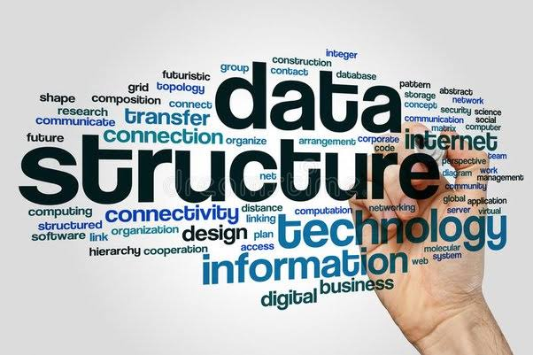

𝐃𝐀𝐓𝐀 𝐒𝐓𝐑𝐔𝐂𝐓𝐔𝐑𝐄𝐒 𝐔𝐒𝐈𝐍𝐆 𝐂++
Data structures are formats used to organize,store,and manage data. You can use data structures to access and modify data efficiently.
These are just few examples of data structures in c++.
- Arrays: A collection of elements stored in contiguous memory locations.
- Vectors: A dynamic array that can resize itself automatically when needed.
- Linked Lists: A collection of nodes where each node contains a data field and a reference (link) to the next node in the sequence.
- Stacks: A Last-In-First-Out (LIFO) data structure where elements are inserted and removed from the same end, known as the top
- Queues: A First-In-First-Out (FIFO) data structure where elements are inserted at the rear and removed from the font
- Trees: A hierarchical data structure consisting of nodes connected by edges. Common types include Binary Trees, Binary Search Trees, AVL Trees, etc.
- Graphs: A non-linear data structure consisting of nodes (vertices) and edges connecting these nodes.
- Hash Tables: A data structure that stores key-value pairs, allowing for efficient insertion, deletion, and lookup operations.

HELPFUL REFERENCE BOOKS :
- Advanced Data Structures - Peter Brass
- Data Structures, Algorithms and Applications in C++ - Sartaj Sahni
- Fundamentals of Data stuctures in c++ - Sahni Horowitz
- Data Structures using C++ - Varsha H.Patil
- Structures using C & C++ - Rajesh K. Shukla